방송 편성 제안
배경 및 목표
- 채널 A 는 강철부대 W 등 신규 프로그램 방영 준비 중
- 2024 년 4 분기에도 최신 자료에 기반한 편성이 필요한 상황
- 시청률 데이터를 기반으로한 시청 특성 확인 및 전략적 편성 제안
수집 및 분석
- 종편사 시청률 자료 (채널A , JTBC, TV조선, MBN)
- Pandas를 활용한 데이터 전처리 및 분석
- Matplotlib을 활용한 데이터 시각화
결과 및 해석
- "채널 A 시청자 층은 뉴스 방송을 중심으로 탄탄하다."
- 프로그램별: 뉴스와 다음 프로 편차 ↓
- 요일별: 평균 시청률 ↓ 편차 ↓
- 시간대별: 최고 시청률 ↓ 편차 ↓
제안
- "뉴스를 기준으로 연쇄 효과를 만들자"
- 강조 프로그램 편성을 뉴스 후 타임으로 편성
- 다만 편성은 시청률 외 다른 요소 고려도 필요
업무
수집 및 분석
종편사 시청률 자료
Pandas를 활용한 데이터 전처리 및 분석
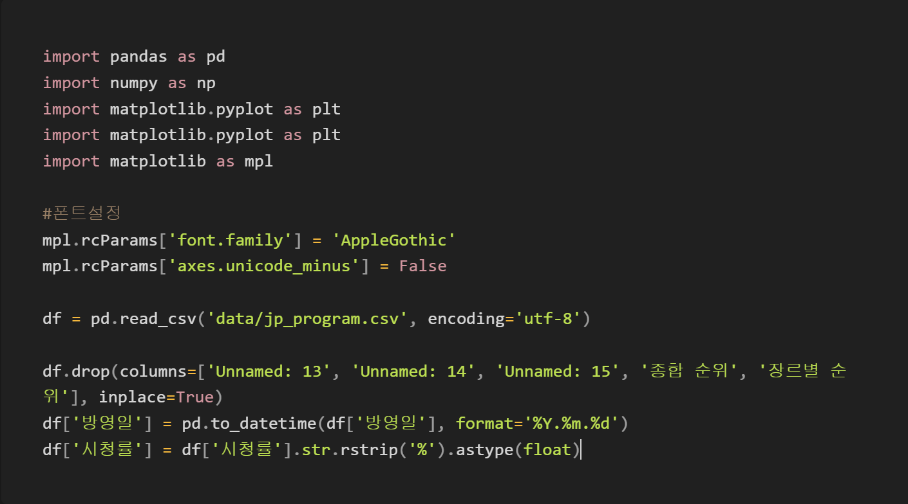
Matplotlib을 활용한 데이터 시각화
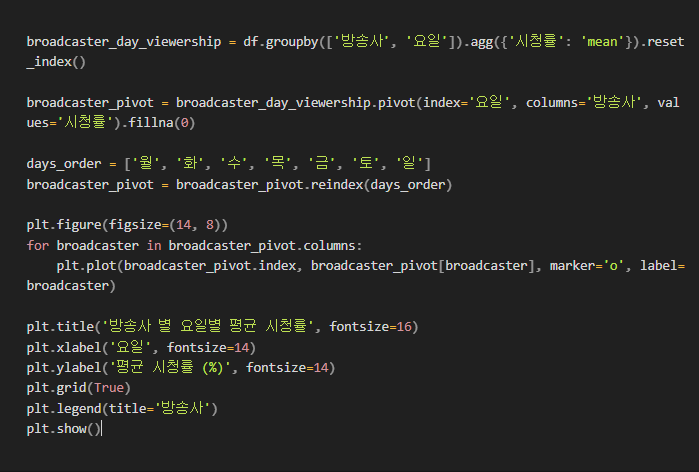
결과 및 해석
* 요일별 방송사 뉴스, 뉴스 후 프로 시청률 변화
* 요일별 방송사 전체 평균 시청률 변화
요일별 방송사 전체 평균 시청률 변화

방송사별 저녁, 프라임 시간대 평균 시청률
 방송사별 저녁, 프라임 시간대 평균 시청률 차이
방송사별 저녁, 프라임 시간대 평균 시청률 차이
 제안
제안
강조 프로그램 편성을 뉴스 후 타임으로 편성
*
방송사별 뉴스 프로그램 그 다음 프로그램 상관관계 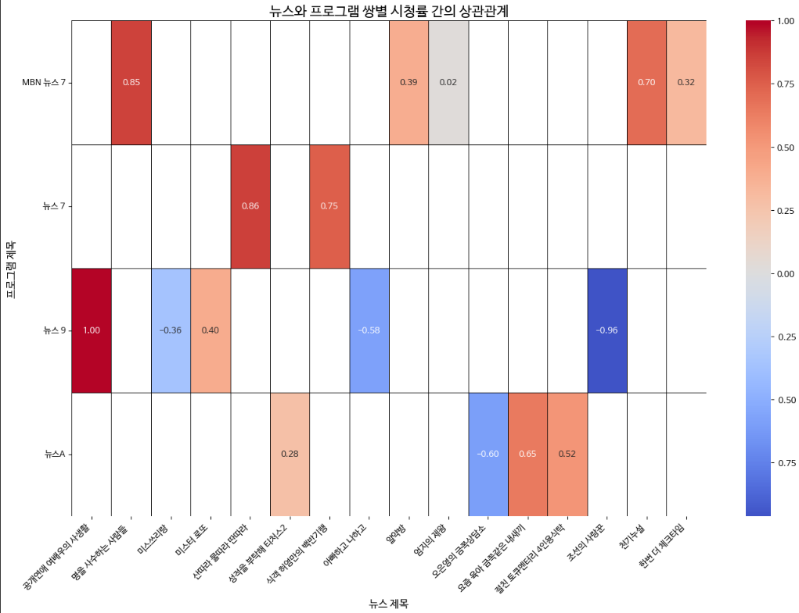 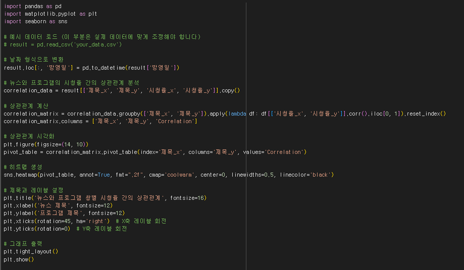
**
Scikit-Learn을 활용한 시청률 예측
 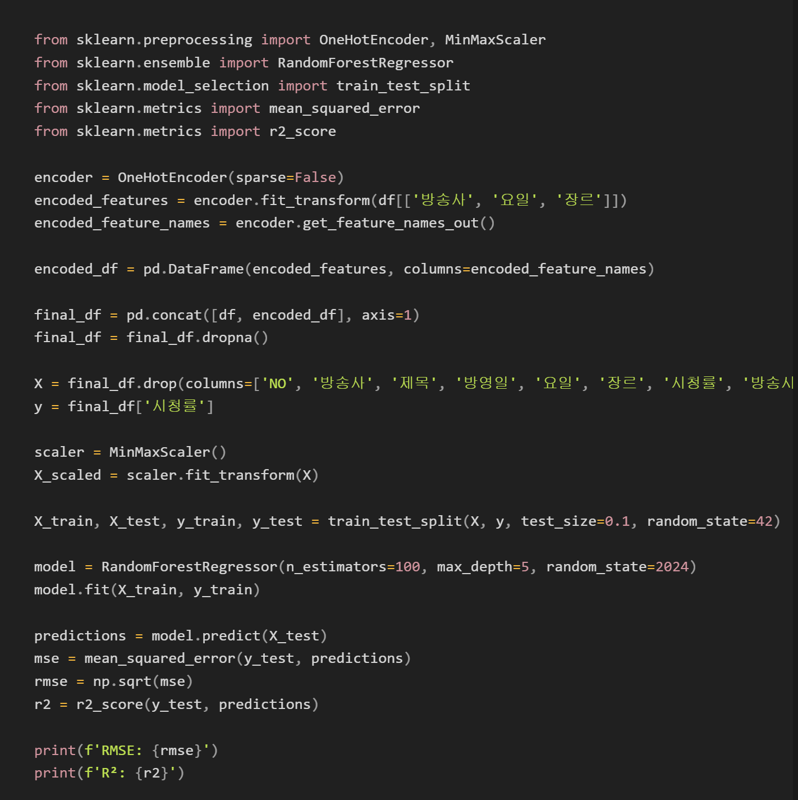
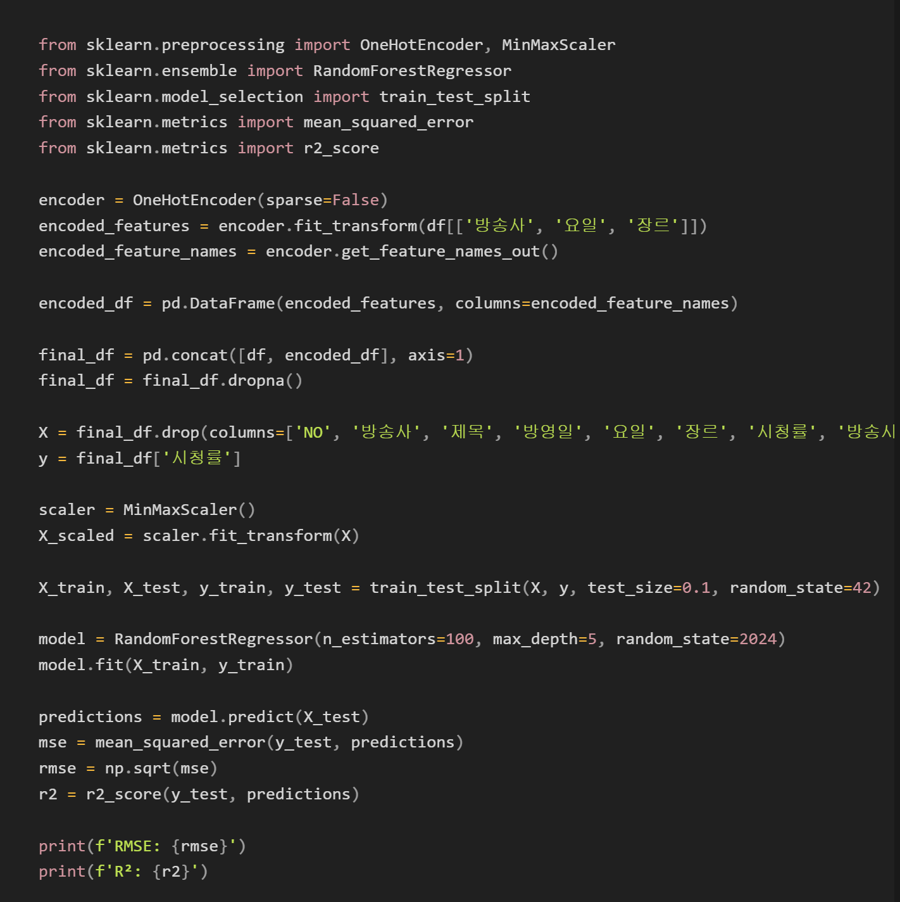
종편사 시청률 자료
- 채널A , JTBC, TV조선, MBN
- 2024년 6월 01일~ 2024년 09월 03일
- 채널A 112개, JTBC 95개, TV조선 130개, MBN 140개
- 스크랩 공간 : 포털 다음 | 출처 : 닐슨
- 저녁, 프라임 시간대 시청률, 장르, 방송시간 등 엑셀 정리
{kind=link}
{kind=link}
Pandas를 활용한 데이터 전처리 및 분석
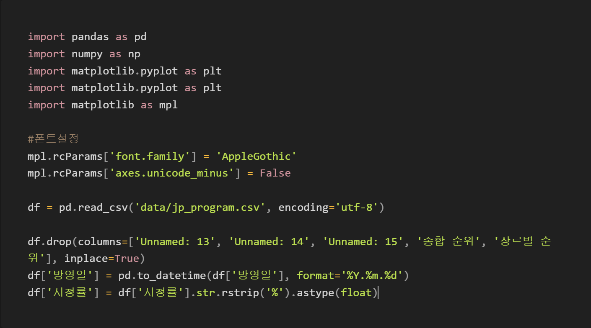
- 방영일 ➝ %Y.%m.%d 포맷
- 시청률 ➝ rstrip(‘%’), float 형태
- 최적화 : 순위 및 불필요 열 제거
Matplotlib을 활용한 데이터 시각화
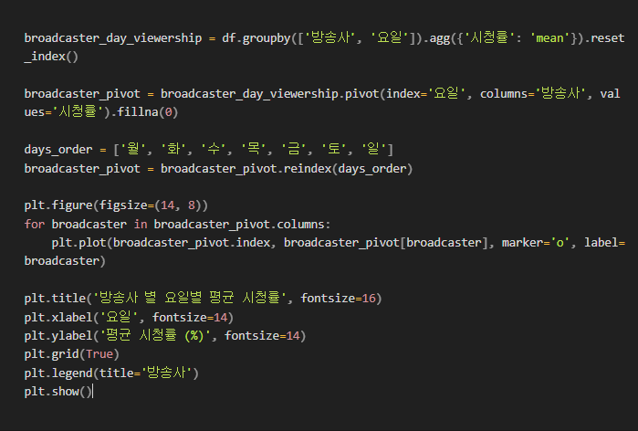
- ex) 요일별 방송사 전체 평균 시청률 변화
- groupby, pivot 활용한 묶음
- Matplotlib 활용한 꺽은선 그래프
결과 및 해석
* 요일별 방송사 뉴스, 뉴스 후 프로 시청률 변화
*
요일별 방송사 전체 평균 시청률 변화
방송사별 저녁, 프라임 시간대 평균 시청률
방송사별 저녁, 프라임 시간대 평균 시청률 차이
제안
강조 프로그램 편성을 뉴스 후 타임으로 편성
- EX) 강철부대 W : 21:40 → 20:10
- 기대 평균 시청률 : 2.74
- 실제 평균 시청률 : 2.68
- RMSE : 0.46 | R2 : 0.86
{kind=link}
*
방송사별 뉴스 프로그램 그 다음 프로그램 상관관계 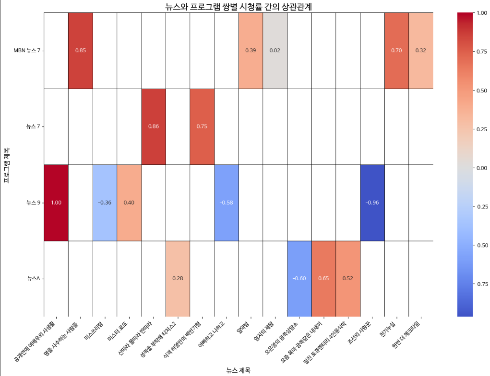 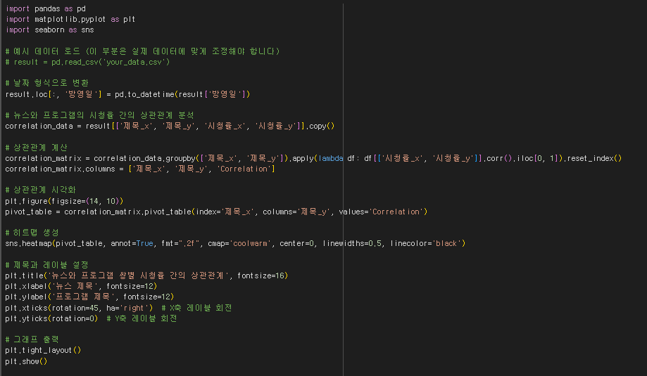
**
Scikit-Learn을 활용한 시청률 예측
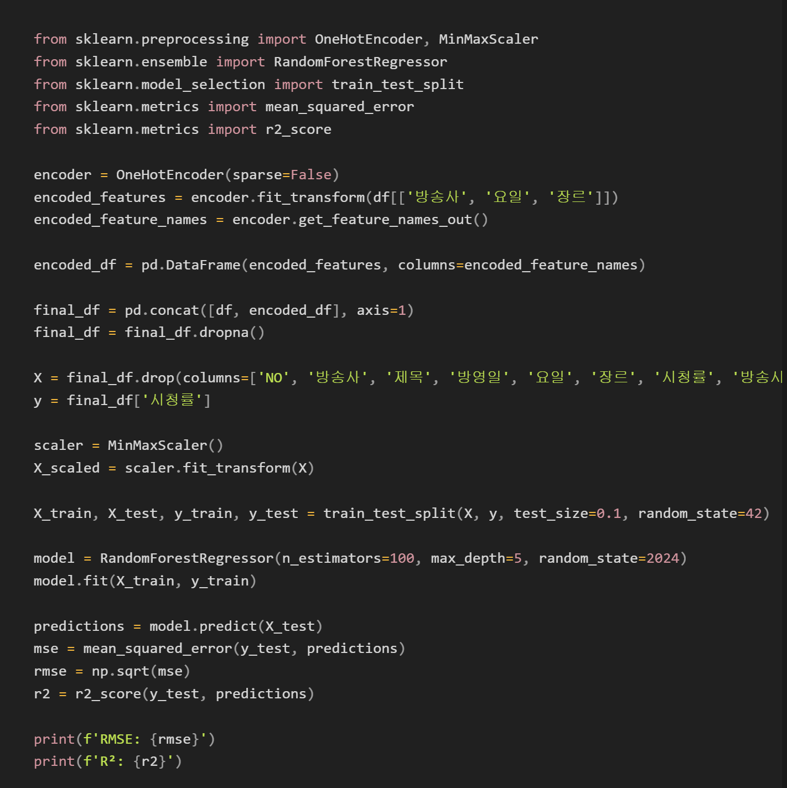
- 방송시간 ➝ 시간의 분 단위화, 200 분 이하 데이터로 필터링
- 의사 결정 나무 ➝ 랜덤 포레스트 | 머신러닝
- 범용성 ↑ 설명력 ↑ 잔차합 ↓